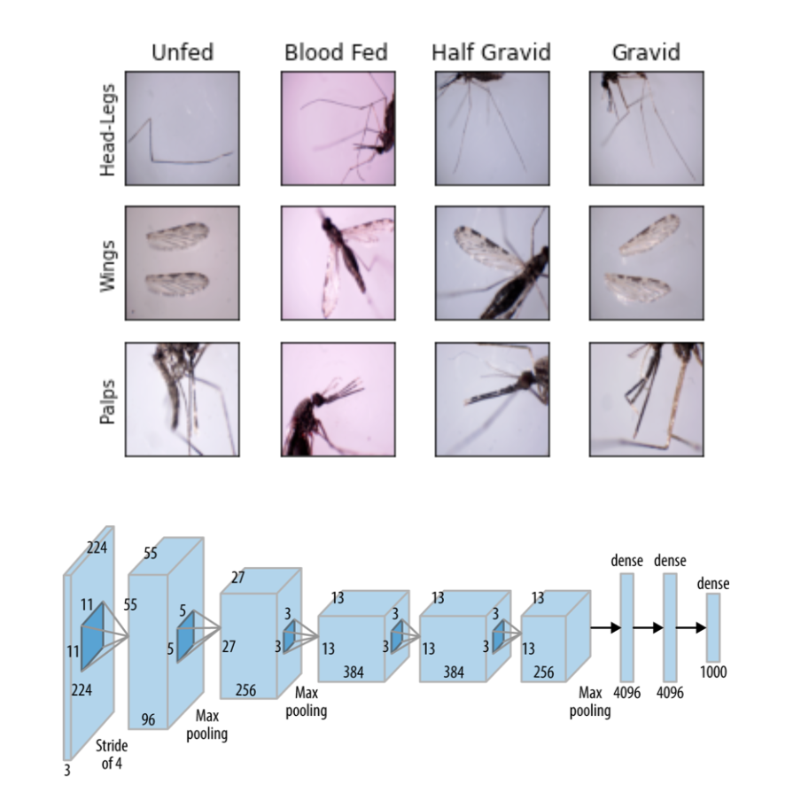

| Paper PDF |

|
High-throughput mosquito surveillance technologies are vital for epidemiological studies concerned with investigating malaria incidence in remote areas. Mosquitoes are known to transmit malaria parasites during only certain stages of their gonotrophic (reproductive) cycle. Thus, this project explores the use of deep convolutional neural network (CNN) models to determine the gonotrophic state of a mosquito through images of its head, legs, wings, and palps. Two CNN architectures were considered: AlexNet and InceptionV3. Pre-training, data augmentation, and random oversampling techniques were employed to reduce overfitting and mitigate class imbalances in the dataset. In all cases, classifier performance was weak and test accuracies above ~45% were not observed. Taken together, this project lays the groundwork and proposes strategies for automated identification of gonotrophic state by inspection of mosquito images. |
|
|
| Paper: |
Code and Data:
|